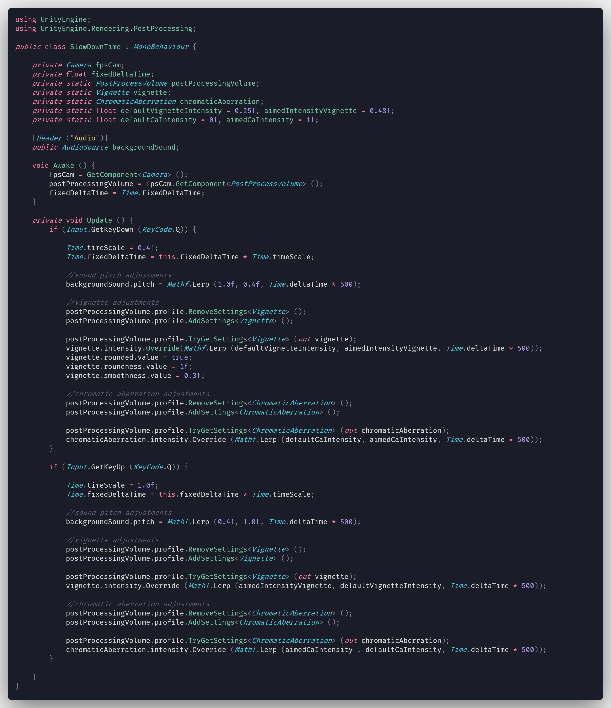
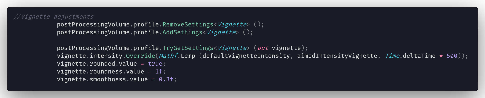
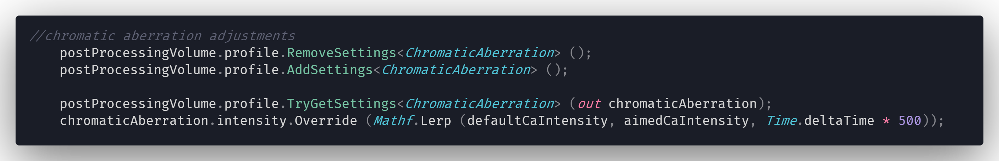

One might need to manipulate Unity's post processing stack at runtime for different reasons. In my case I needed to change the intensity of the vignette when the player push a certain button. When the button is pushed the intensity of the vignette is increased at runtime with the aim of visually supporting a gameplay mechanic.
Example Script
How does it work?
First of all you need to add "using UnityEngine.Rendering.PostProcessing;" line on top of your script in order to work with post processing stack. The example script is attached to a camera object which has a post processing volume on it so in order to edit that post processing stack you need to store it in a variable.
Since "GetComponent" is a performance heavy function its important to store components or scripts which we will use later in the "Awake" function for optimization reasons. By doing so we are avoiding calling so many performance heavy functions later on the script.
When player presses the "Q" key "timeScale" is changed to 0.4 and the pitch of the background audio is linearly interpolates between 1.0 to 0.4 with the help of "Mathf.Lerp" in order to have a slow motion effect. (Please keep in mind that this part of the code has nothing to do with manipulating post processing stack)

This is the part where I'm manipulating post processing effects on runtime thanks to this script.
"TryGetSettings
After that you can override the intensity or other properties such as smoothness and/or roundness of the vignette to your desired amount.

Same principles can be applied to other post processing effects as well. As you can see in the example above I
added a chromatic aberration effect and overrided its intensity
Unity's Official Documentation regarding this subjects is a bit vague and not very detailed but you can find it on resources section.
Resources:
There might be better ways of doing things which I might not be aware of. Since I'm still learning take everything with a grain of salt and always do your own research.